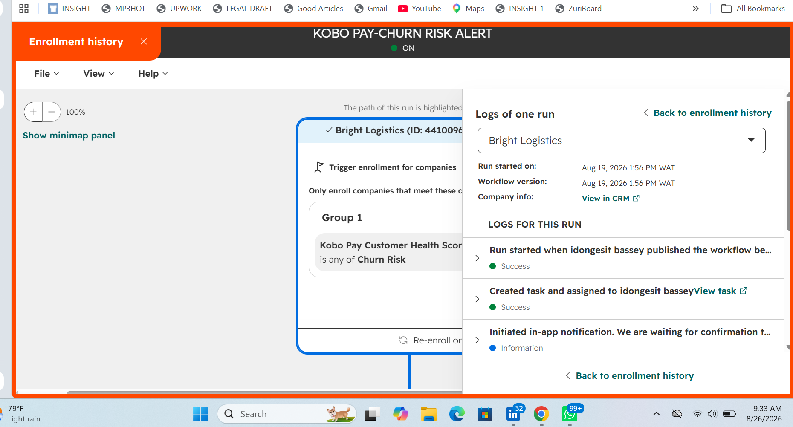

01 / FLAGSHIP CASE STUDY
RETENTION · CUSTOMER HEALTH · HUBSPOT
Catching Churn Before It Happens
A Customer Health & Renewal Early-Warning System for Kobo Pay
A simulated B2B Fintech Customer Success Environment built to show how customer signals can become account-health decisions, automated CSM intervention and earlier renewal action.
16companies modelled
$620Ksimulated portfolio ARR
29support tickets created
HubSpot · Kobo Pay

WORKING AUTOMATIONRisk detected → task created → alert triggered → next action updated